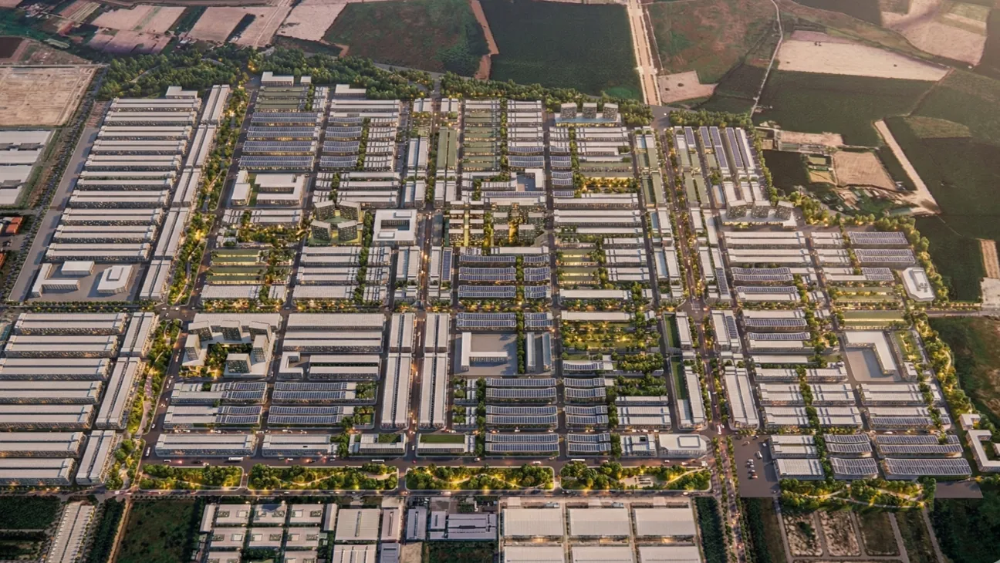
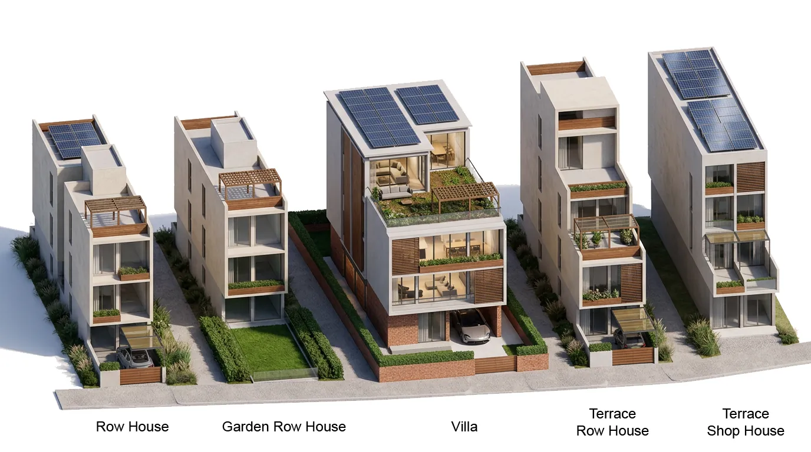
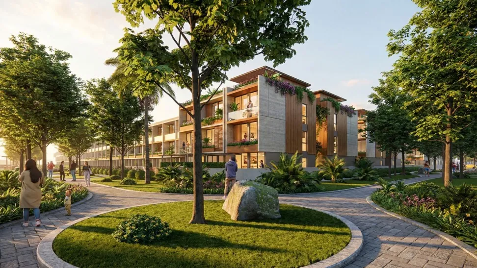

Bau Bang Residential Planning

Baubang residential planning development
Project Overview
Located in Lai Uyen Town,Vietnam, the project is strategically positioned 65km from the HCMC CBD and 28km from Binh Duong New City,benefiting from two primary access routes.
To resolve the client's concern regarding grid monotony without sacrificing the efficiency of a highly developable master plan, the strategy shifts from a traditional "static" subdivision to a parametric, rule-based township model which assigns higher land values based on proximity to green and public space networks. We create diversity not by randomly drawing curved streets, but by systematically linking unit typologies to these networks with logic instructions which can be explored, tuned, and ultiately deployed.
Technical Data
- Status: Competition
- Area: 3,085,892 sqm
- Tools: Rhino, Grasshopper
- Typology: Residential Planning
Bau Bang Animation: Computational growth logic.
A rule-based model for that generates urban designs based on variable road conditions. This allows for the rapid exploration of planning iterations by simply adjusting the input parameters of the transportation network.

Algorithmic workflow and block subdivision logic.

Algorithmic Generated option

Algorithmic Generated option rendering

Housing Typologies

Terrace House

Landscape Typologies

Landscape Rendering